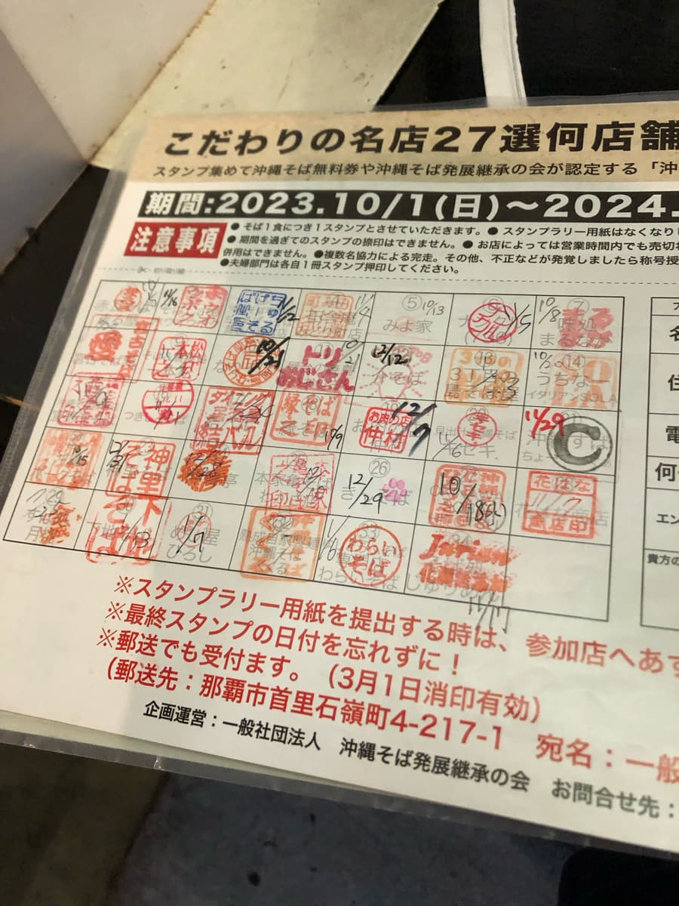
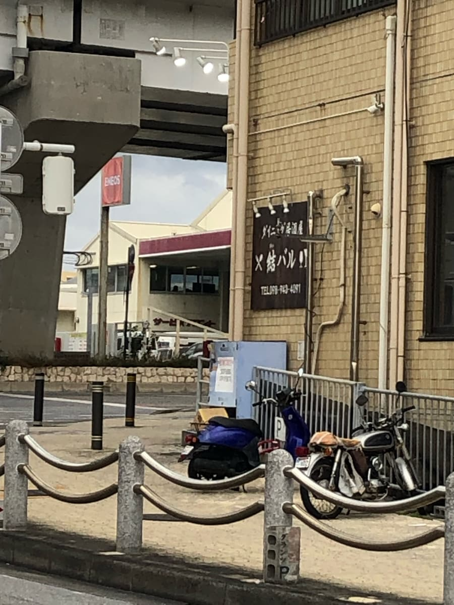
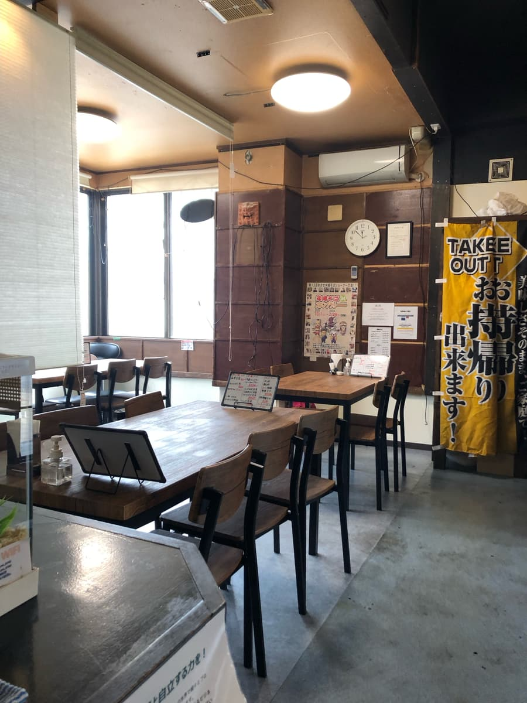
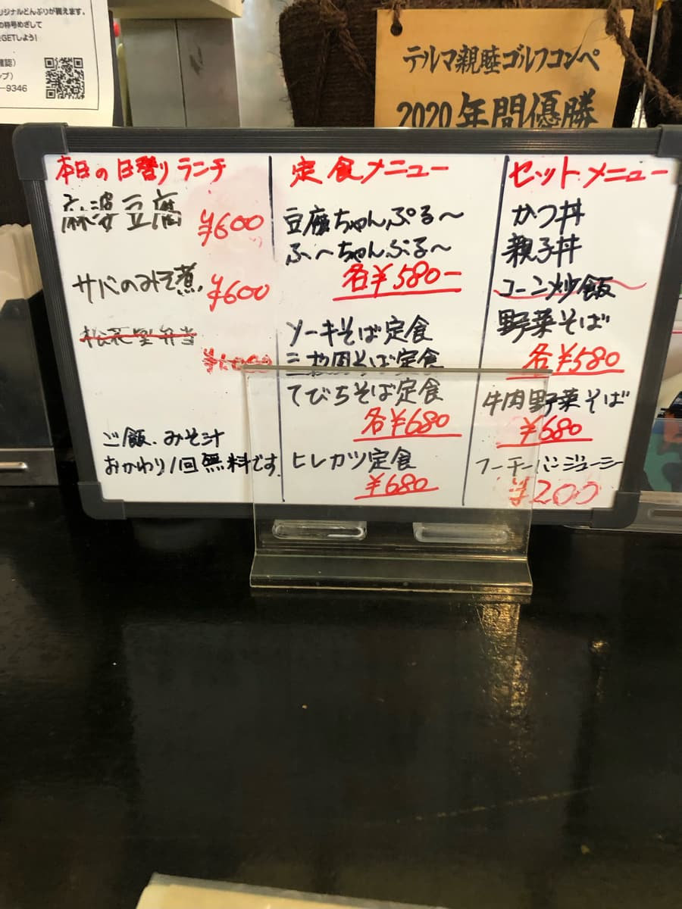
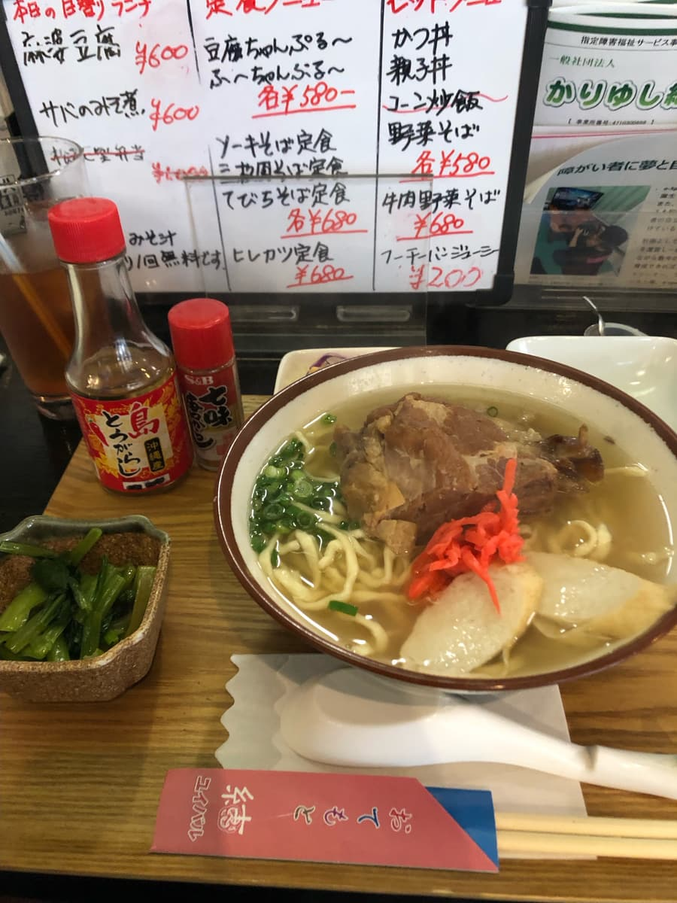
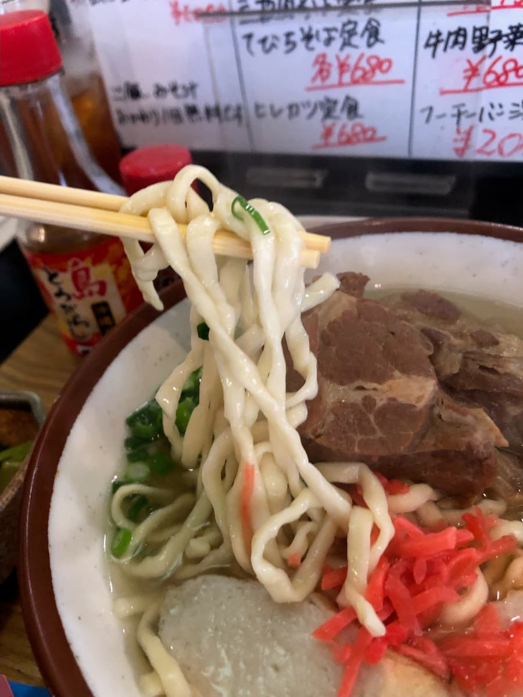

2024年1月吃的。这家店是「第13届冲绳面集章活动（2023.10.1～2024.2.29）」的参加店，是我去的第34家／共34家😊 终于集章活动全店过关了🎉㊗🎊

不过我的目标是走遍冲绳本岛所有的冲绳面店，所以今后也会继续一步一脚印、不疾不徐地吃下去😆


这家店晚上似乎也是居酒屋，店内空间算相当宽敞。

点餐方面，决定点集章活动上介绍的「排骨面」。上面照片的菜单上排骨面套餐的价格是680日圆，不过单点菜单是580日圆，更便宜了(^0^;)
因为我只想吃面，所以决定单点「排骨面」😆

先喝一口汤。柴鱼高汤味突出，就是很普通的好吃呢😁

面条是中粗、微微弯曲的面。口感偏软，也是很普通的好吃。配料的排骨以这个价格来说也算大块，份量十足。
评分（9分/15分）：就是很普通的好吃，价格又实惠，还附小菜、沙拉，很划算😁 另外，这家店似乎是以就业支援事业的一环营业，店员也是就业支援的人员，很努力地询问点餐，接待相当周到。店内也有就业支援的捐款箱，要不要为了加油来光顾一次呢？
面：★★★☆☆（3）
汤头：★★★☆☆（3）
配料：★★★☆☆（3）